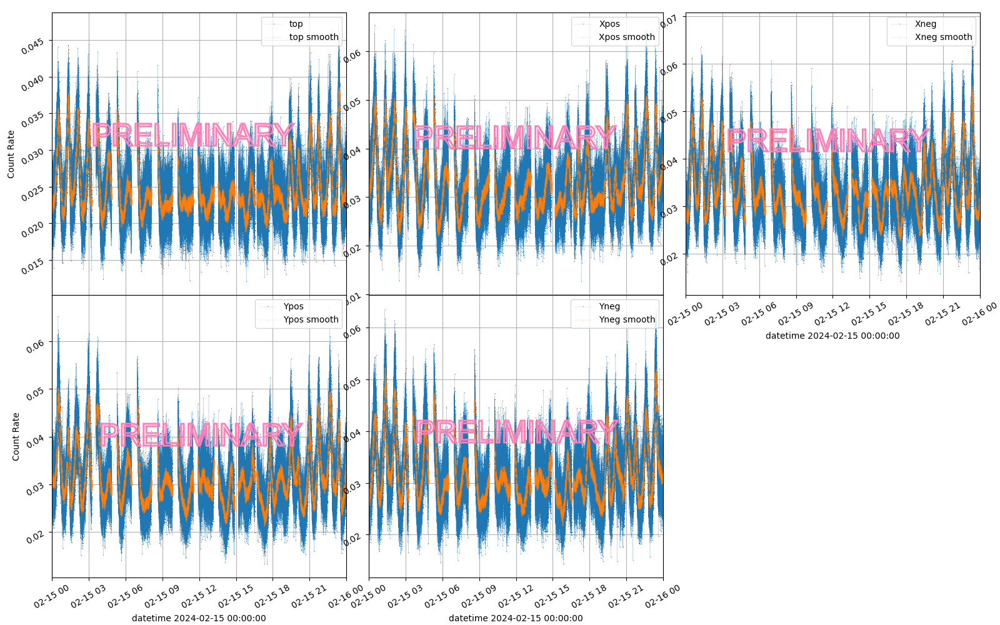
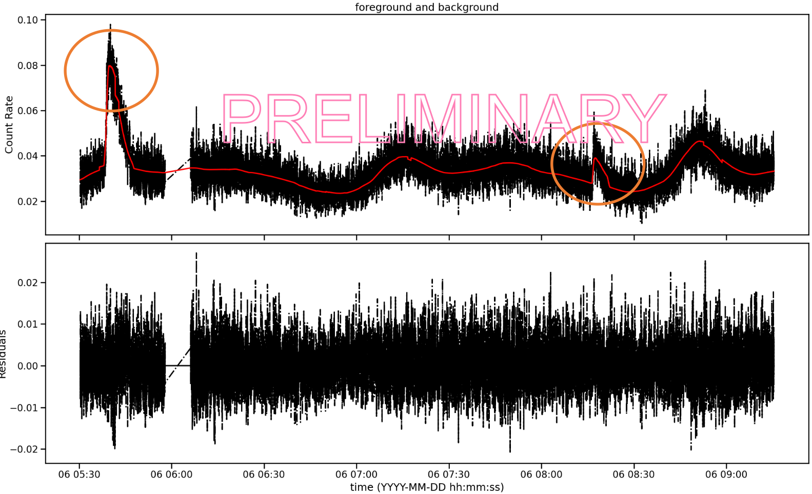

This work presents a versatile and flexible Machine Learning-based software designed to
address two main challenges:
modeling the temporal behaviour
within time series datasets to predict the evolution of time series;
identifying anomalies within those series;
2. What is The Anti-Coincidence Detector?
The Anti-Coincidence Detector (ACD) is a system on board of Fermi used to reject background
signal such as charged-particles from the Large Area Telescope signal.
The ACD is composed of 89 plastic scintillator tiles that detect particles and photons, distributed in the five faces. The signal in each face
looks like this:

3. Dataset
The dataset used for the training and testing of the software is composed of the time series of the five signals in the ACD and a set of input features:
the parameters in the weekly Spacecraft files (FT2) from the Fermi Collaboration;
the Solar Activity retrieved from the Geostationary Operational Environmental Satellite (GOES) X-Ray Sensor (XRS);
the signals of the five faces in the ACD.
4. Background Prediction with Neural Networks
The software was developed starting from the need to predict the background in the ACD.
The software implements a Feed Forward Neural Network (FFNN) to model the temporal behaviours.
As a supervised technique, the neural network training is performed on a dataset having as labeled ouput the ACD signals in the dataset and the input parameters:
The NN has a Mean Absolute Error Loss Function, less sensitive to outliers in the dataset:
4. Results of the NN
The FFNN was trained on a dataset from February 2024 to July 2024, and then tested on different periods with known solar flare events.

Even if the (present) period occurs during a solar maxima and therefore there are plenty of solar flare events, the model still has some problem in accurately describing the flares.
4. Identification of anomalies: Gaussian FOCuS
5. Results of the Triggering Algorithm
Validation plots for the DNN-based model of the tracking efficiency (left) and the GAN-based model of
the spatial tracking resolution (right).
6. Charged particles: the PID system
Lamarr parameterizes the high-level response of the LHCb PID system relying on the following
models:
RICH PID: parameterizes DLLs resulting from the RICH detectors →
GAN model;
MUON PID: parameterizes likelihoods resulting from the MUON system →
GAN model;
isMuon flag: parameterizes the response of a FPGA-based criterion for muon loose
boolean selection → DNN model;
Global PID: parameterizes the global high-level response of the PID system,
consisting of CombDLLs and ProbNNs → GAN model.
Lamarr provides separated models for muons, pions, kaons,
and protons for each PID set of variables.
Validation plots for the proton-kaon separation parameterized with the GAN-based models of the RICH
response in terms of distributions (left) and proton selection misidentification (right).
7. Neutral objects: the ECAL detector
The flash simulation of the LHCb ECAL detector is a non trivial task:
bremsstrahlung radiation, converted photons, or merged \(\pi^0\) may lead to have \(n\) generated
particles responsible for \(m\) reconstructed objects (in general, with \(n \ne m)\);
the particle-to-particle correlation problem limits the validity of strategies
used for modeling the unambiguous \(k\)-to-\(k\) detector response.
To parameterize a generic \(n\)-to-\(m\) response of the ECAL detector, solutions inspired by the natural
language translation problem are currently under investigation:
the aim is to define an event-level description of the ECAL response;
assuming ordered sequences of photons/clusters, the problem can be modeled with a
Transformer model;
complying with the problem topology, the ECAL response can be modeled with a
Graph Neural Network (GNN) model
Validation plots for the \((x, y)\)-position of the ECAL clusters as reconstructed by detailed
simulation (left) and a Transformer-based model (right). Each bin entry is properly weighted to
include also the energy signature.
8. Validation campaign
Lamarr provides the high-level response of the LHCb detector by relying on a pipeline of
(subsequent) ML-based modules. To validate the charged particles chain, the distributions
of a set of analysis-level reconstructed quantities resulting from Lamarr have been compared
with those obtained from detailed simulation for \(\Lambda_b^0 \to \Lambda_c^+ \mu^- X\) decays
with \(\Lambda_c^+ \to p K^- \pi^+\).
The deployment of the ML-based models follows a transcompilation approach based on
scikinC. The models are translated to C files, compiled as
shared objects, and then dynamically linked in the LHCb simulation software (Gauss).
The integration of Lamarr with Gauss enables:
interface with all the LHCb-tuned physics generators (e.g., Pythia8, EvtGen);
compatibility with the distributed computing middleware and production environment;
providing ready-to-use datasets for centralized analysis.
Validation plots for the \(\Lambda_c^+ \mu^-\) mass obtained from Pythia8 (left) and particle-gun (right)
generators by Lamarr VS. detailed simulation. Reproduced from
LHCB-FIGURE-2022-014.
9. Preliminary timing studies
Overall time needed for producing simulated samples has been analyzed for detailed simulation (Geant4-based)
and Lamarr. When Lamarr is employed, the generation of particles from collisions (e.g., with Pythia8)
becomes the new major CPU consumer.
Lamarr could allow to reduce the CPU cost for the simulation of (at least)
two-order-of-magnitude. Further reductions will require speeding up the generators.
The development of ACDAnomalies is ongoing to offer a versatile and flexible tool
for the anomaly detection in time series data.
FFNN-based models can be used to describe complex dependencies, such as the ones dependent on the environment
in which the Fermi satellite is immersed.
Work is still required to assess the performance of the neural network in big datasets and in different conditions (e.g.
periods in which the solar activity is particularly high).
The triggering algorithm is an importan part of the software, and it is still under development.
Future development of ACDAnomalies aims to support both integration within the Fermi software stack and its
use as a stand-alone package.
Acknowledgements
The work presented in this contribution is performed in the framework of Spoke 0 and Spoke 3 of the ICSC
project - Centro Nazionale di Ricerca in High Performance Computing, Big Data and Quantum Computing,
funded by the NextGenerationEU European initiative through the Italian Ministry of University and
Research, PNRR Mission 4, Component 2: Investment 1.4, Project code CN00000013 - CUP I53C21000340006.